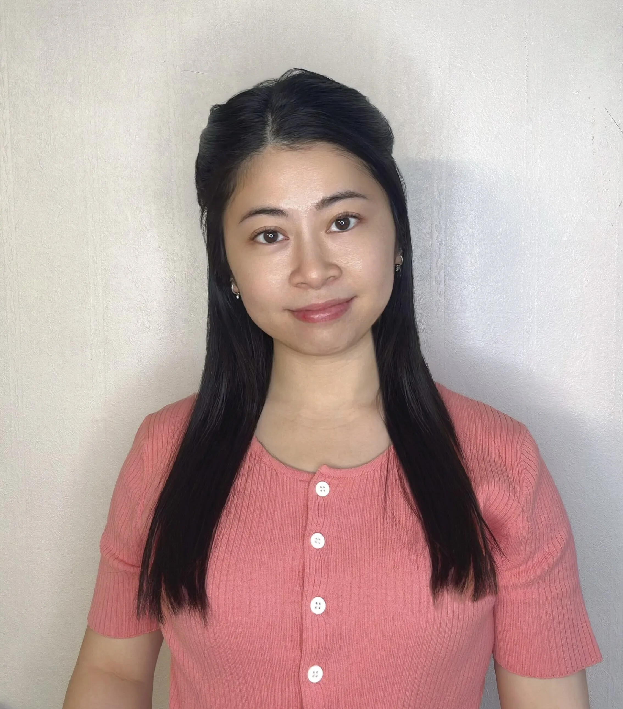
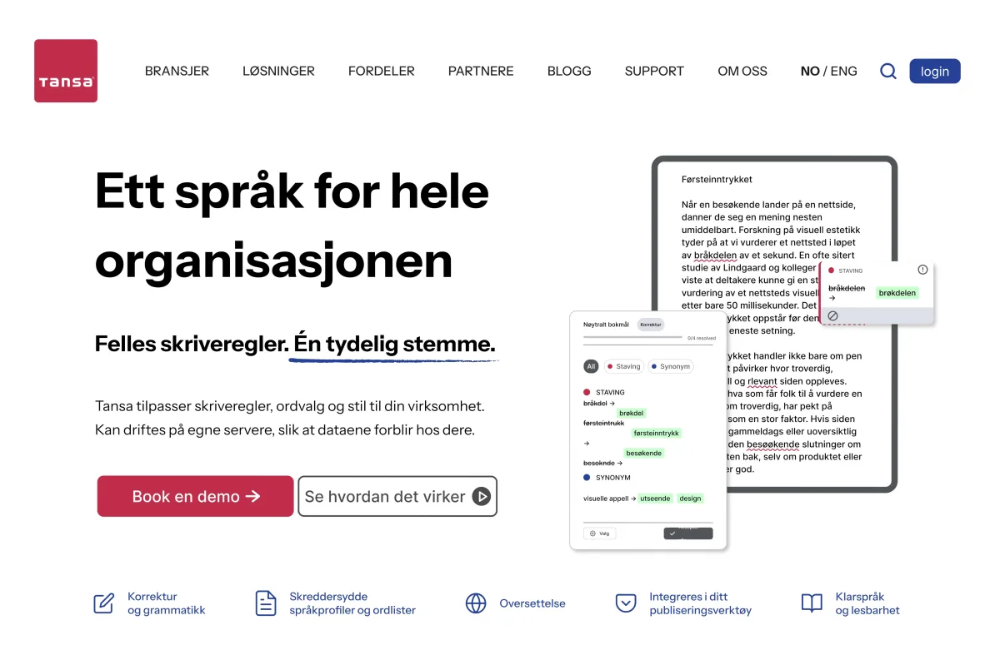
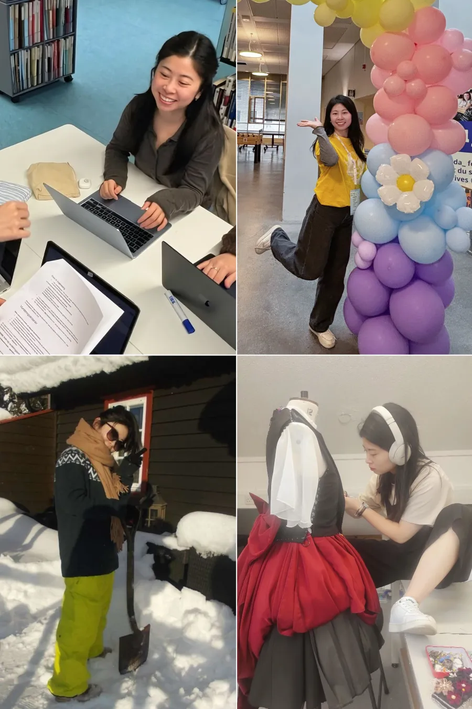
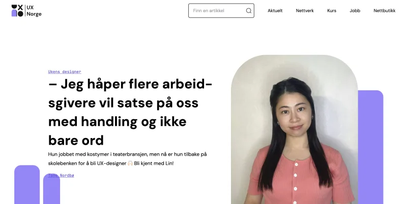

Verdt å vite: KI-drevet økonomiforståelse
UX/UI-designer for en KI-agent som hjelper bankkunder å forstå sin egen økonomi, laget med Tieto Banktech.
Se hvordan jeg jobbet →Lin Wei Lam

UX- og interaksjonsdesigner i Oslo
Det morsomste jeg vet er å finne ut hva folk egentlig trenger,
og hvorfor.
Derfor lager jeg tilgjengelige og intuitive løsninger som
faktisk fungerer.
Interaksjonsdesignstudent ved Fagskolen Kristiania | Åpen for deltidsstillinger og internship
UX/UI-designer for en KI-agent som hjelper bankkunder å forstå sin egen økonomi, laget med Tieto Banktech.
Se hvordan jeg jobbet →
Et konsept som hjelper nevrodivergente unge voksne å klare seg selv når de flytter hjemmefra. 🥉 Bronse i pitchkonkurransen på HealthHACK 2026.
Se hvordan jeg jobbet →
Innsiktsarbeid og redesign av hero-seksjonen for et norsk selskap som lager språkverktøy. Jeg ledet innsiktsarbeidet og presentasjonen for oppdragsgiveren.
Se hvordan jeg jobbet →
Jeg heter Lin, men alle vennene mine kaller meg Linnie! 💛
Nå går jeg siste år på interaksjonsdesign ved Fagskolen Kristiania
i Oslo.
Nysgjerrigheten driver meg, og jeg er opptatt av design og teknologi som setter mennesker i sentrum. Derfor er det viktig for meg at det jeg lager, er tilgjengelig, intuitivt og meningsfullt.
I sommer var jeg UX/UI-designer hos Tieto Banktech, der jeg designet et konsept for en KI-agent i et tverrfaglig team. For meg handler det om å ha det gøy samtidig som jeg lærer, og det er derfor jeg driver med det jeg gjør.
Før UX studerte jeg historisk kostyme ved Arts University Bournemouth og jobbet flere år med teaterproduksjon i Storbritannia og på internasjonale cruiseskip. Der lærte jeg å samarbeide på tvers av fag og forstå hva folk faktisk trenger. Jeg snakker også fem språk: norsk, engelsk, kantonesisk, mandarin og litt japansk.
På fritiden er jeg ofte frivillig på tech- og designarrangementer. Ellers er det mye håndverk, maling og journaling med en kopp te og kvalitetstid med venner og familie. Og på søndager er det tradisjon å ta det rolig om morgenen med nystekte vafler, rømme og jordbærsyltetøy!
Åpen for deltid, internship og fast stilling fra sommeren 2027.
Ta gjerne kontakt!

Intervju
UX Norge intervjuet meg om veien min fra teaterproduksjon og historisk kostyme til interaksjonsdesign.